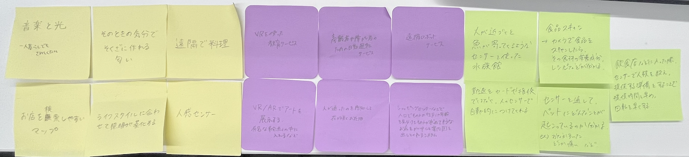
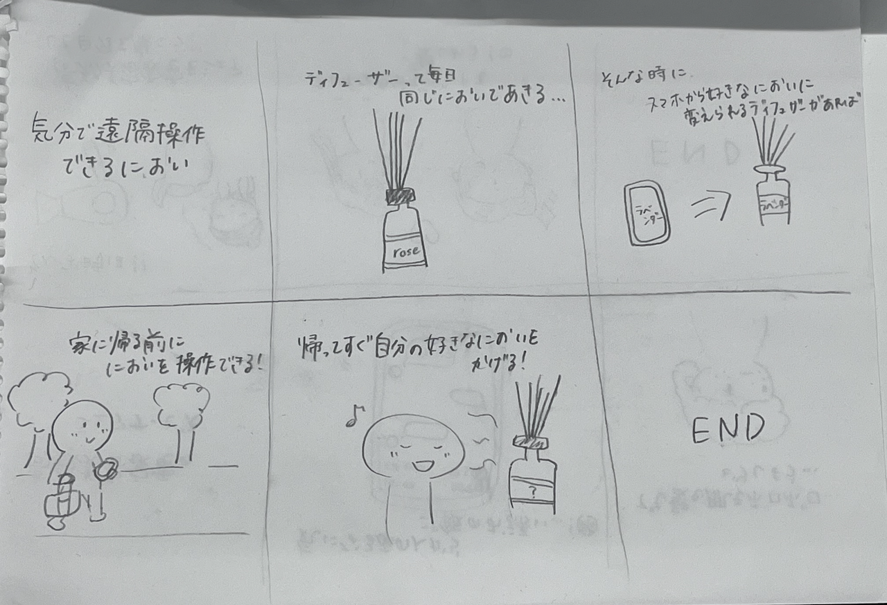

デザイン演習Ⅲ・Ⅳ 第2回
どのようなIoTの新しいサービスが考えられるか？
メディアアートのようなサービスだと、チームラボのような世界観を生活にも取り入れ、フライパンを使ったら家のライトが赤く光るなどのサービスがあれば、楽しく過ごせそうという意見が出ました。
また、アルバイトなどの勤怠を人感センサーで自動的につけてくれるサービスがあれば楽なのではないかという意見が出ました。
＜グループで出た意見＞
自分で考えたアイデア＜気分で遠隔操作できるにおい＞
玄関や家の中に置くディフューザーは、毎日同じ匂いで飽きてしまうといった悩みがあると思います。また、気分によって様々なニオイを嗅ぐことができたら、ディフューザーを何個も買う手間が省けるのではないでしょうか？ そういった悩みや手間を解決するために、スマホで遠隔操作できるディフューザーがあればとても便利だと思いました。来客や色々な場面に合わせてニオイを変えることができれば、おしゃれな人だということをアピールできますし、メリットしかないのではないでしょうか？
